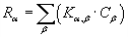

CONTAM 提供了对建筑物房间内项目污染物之间的化学反应进行建模的能力，包括简单空气处理系统的隐式供应和返回节点（请参阅空气处理系统）。 CONTAM 中的动力学反应被建模为物种之间的一阶指数函数，其中包含反应物和产物污染物之间配对的一阶反应速率系数。参见 阿克斯利 [1988] and 阿克斯利 [1995] 了解 ContamX 采用的动力学反应模拟方法的详细介绍。污染物的产生或破坏 a 由下式给出

哪里
Ra 污染物的产生或破坏率 a
Ka,b 污染物之间的反应速率系数 a and b ，单位为 1/s
Cb 反应物浓度
CONTAM 使用以下约定：正反应系数会增加物质浓度，负系数会降低物质浓度。浓度单位为 kg_species / kg_air（参见 浓度换算 ).
动力学反应可以发生在建筑物的房间内。要使用动力学反应，您必须为该项目至少拥有一种物种。动力学反应可以与项目中的一个或多个房间相关联。您可以通过提供动力学反应定义部分的房间（即房间和简单空气处理系统）的属性表访问动力学反应数据对话框。
您还可以访问 动力学反应数据 使用 CONTAMW 数据和库管理器：动力学反应创建和编辑本地项目数据或使用污染物库在 CONTAM 项目之间共享动力学反应。
当您定义构建房间时，您将能够选择当前定义的动力学反应与其关联、定义新的、修改现有的或从物种相关的 CONTAM 库文件（即 LB0 库文件）导入动力学反应。所有动力学反应均使用以下定义和修改 动力学反应数据 对话框如下节所述。